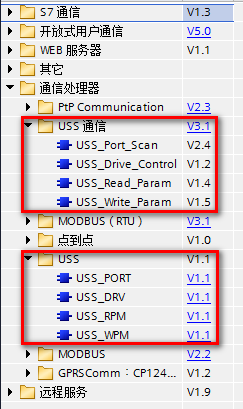
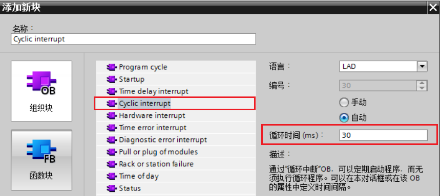
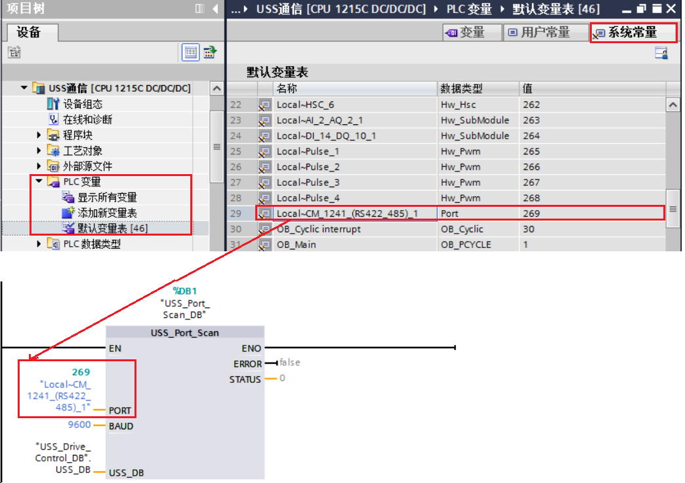
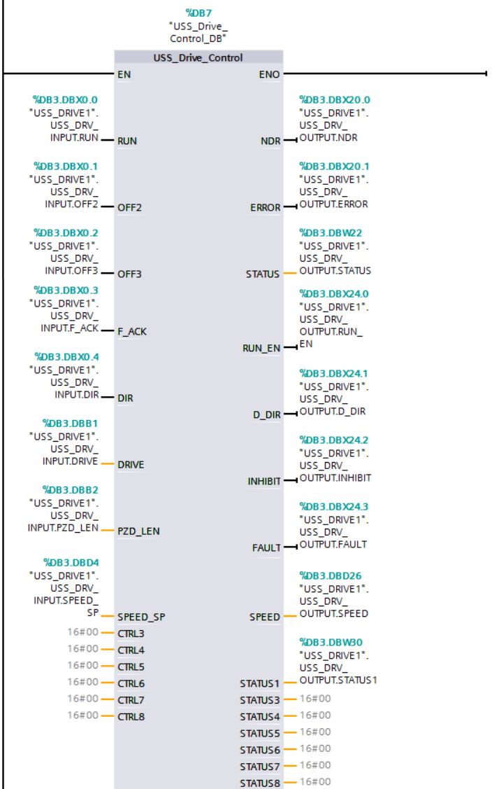
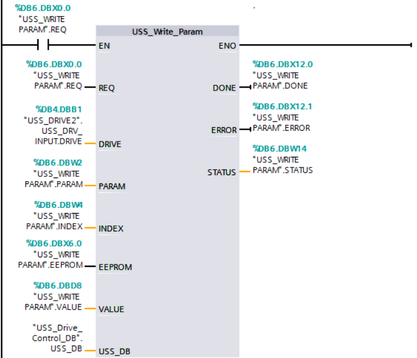
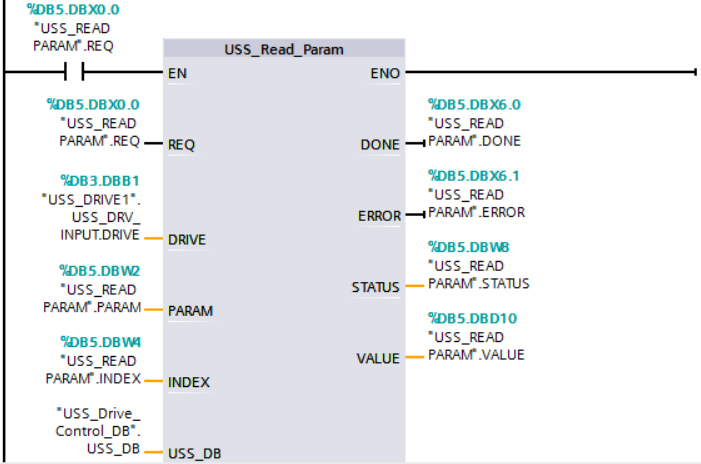
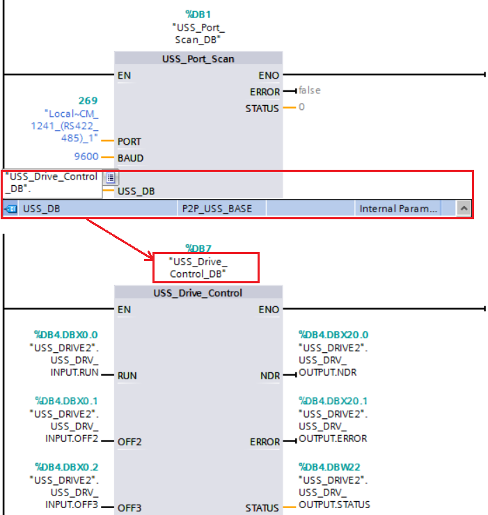

USS 协议（Universal Serial Interface Protocol，即通用串行接口协议）是西门子专为驱动装置开发的通用通信协议，它是一种基于串行总线进行数据通信的协议。
USS 通信总是由主站发起，USS 主站不断轮询各个从站，从站根据收到主站报文，决定是否、以及如何响应。从站必须在接收到主站报文之后的一定时间内发回响应到主站，否则主站将视该从站出错。
USS 协议是主从结构的协议，总线上的每个从站都有唯一的从站地址。一个 S7-1200 CPU 中最多可安装三个 CM 1241 RS422/RS485模块和一个 CB 1241 RS485 板，每个 RS485 端口最多控制 16 台驱动器。
使用环境
实现功能
如图 1 所示，S7-1200 USS 有两个 USS 指令库
“USS通信” 是目前最新的指令库，并且以后的更新也会基于这个指令库。一般情况下，“USS” 只是在老项目中使用。
下面的介绍以 “USS 通信” 指令库为例。

图 1.S7-1200 PLC 的 USS 通信指令
SINAMICS V20 的启停和频率控制通过 PZD 过程数据来实现，参数读取和修改通过 PKW 参数通道来实现。可以使用连接宏 Cn010 实现 SINAMICS V20 的 USS 通信，也可以直接修改变频器参数。
变频器参数设置步骤如下：
(1) 恢复工厂设置 设置参数 P0010（调试参数）= 30，P0970（工厂复位）= 21
(2) 设置用户访问级别 设置参数 P0003（用户访问级别）= 3 (专家访问级别)
(3) 设置 SINAMICS V20 变频器 USS 通信所需的命令源、协议、波特率、地址等参数。选择连接宏 Cn010 后，需要将参数 P2013 的值由 127（PKW长度可变）修改为 4（PKW长度为 4）；
此外对于本例需要将参数 P2010 的值由 8（波特率 38400）修改为 6(本例中使用波特率为 9600），P2010 值与波特率对应关系参见表 1。
表 1 P2010 值与波特率对应关系
参数值 |
6 |
7 |
8 |
9 |
10 |
11 |
12 |
波特率（bps） |
9600 |
19200 |
38400 |
57600 |
76800 |
93750 |
115200 |
本例中使用如下表 2 所列的设置值。
表 2.SINAMICS V20 设置变频器参数值
参数 |
描述 |
设置值 |
备注 |
P0700[0] |
选择命令源 |
5 |
命令源来源于 RS485 总线 |
P1000[0] |
选择设定源 |
5 |
设定值来源于 RS485 总线 |
P2000[0..2] |
基准频率值 |
50.00 |
百分比100% ==> P2000 的值 |
P2023[0] |
RS485 协议选择 |
1 |
USS协议 |
P2010[0] |
USS 波特率 |
6 |
波特率为 9600 |
P2011[0] |
USS 地址 |
1 |
USS 站地址为 1 |
P2012[0] |
USS PZD 长度 |
2 |
USS PZD 长度为 2 个字长 |
P2013[0] |
USS PKW 长度 |
4 |
USS PKW 长度为 4 |
P2014[0] |
USS 报文间断时间 |
500 |
可设置范围 0-65535 ms。报文间隔超过此设定时间还没有接收到下一条报文信息，则变频器将会停止运行。 |
(4) 变频器重新上电
在更改通信协议 P2023 后，需要对变频器重新上电。在此过程中，请在变频器断电后等待数秒，确保 LED 灯熄灭或显示屏空白后再次接通电源。
USS_Port_Scan 指令用于处理 USS 网络上的通信。
用户程序执行 USS_Port_Scan 指令的次数必须足够多，以防止驱动器超时。通常从循环中断调用 USS_Port_Scan 。 例如添加循环中断 OB30， 并设置循环中断时间 30ms。如图 2 所示：

图 2.添加 OB30
USS_Port_Scan 指令输入引脚”PORT“为分配的串口模块的“硬件标识符”。安装并组态串口模块之后，可用的端口标识符将出现在 “PORT “功能框连接的参数助手下拉列表中。或者，可在系统常量中找到该硬件标识符值。在 OB30 中调用”USS_Port_Scan“指令， 鼠标双击 CPU 1215 DC/DC/DC 站点下的 ”PLC变量>默认变量表“ ， 在”系统常量“标签栏中找到本例所使用的 CM1241 RS422/485 模块，如图 3 所示。
USS_Port_Scan 指令输入引脚”USS_DB“指向为 USS_Drive_Control 指令放入程序时创建并初始化的背景数据块的名称。详见常见问题"如何输入参数 USS_DB?"
表 3 为该指令的接口参数说明。

图 3.USS_Port_Scan
表 3.USS_Port_Scan 指令接口参数说明
参数 |
类型 |
数据类型 |
描述 |
PORT |
IN |
Port |
串口模块硬件标识符 |
BAUD |
IN |
DInt |
波特率 |
USS_DB |
INOUT |
USS_Base |
将 USS_Drive_Control 指令放入程序时创建并初始化的背景数据块的名称 |
ERROR |
OUT |
Bool |
该输出为 True 时，表示发生错误，此时 STATUS 输出错误代码。 |
STATUS |
OUT |
WORD |
USS 通信状态值 |
 注意：
注意：
USS_Drive_Control 指令用于请求消息、驱动器响应消息，以及与驱动器交换数据。
例如， 本例中将输入引脚”OFF2“和”OFF3”设置为 True， “”DIR“使能为 True,”Drive“ 设置为 1，"PZD_LEN“设置为 2，”SPEED_SP“设置为 50.0（即 50% 频率值为 25Hz）， 然后将”RUN“ 使能为 True，使变频器以 25HZ 频率运行。如图 4 所示。表 4 为该指令的接口参数说明。

图 4.USS_Drive_Control 指令
表 4.USS_Drive_Control 指令接口参数说明
参数 |
类型 |
数据类型 |
描述 |
RUN |
IN |
Bool |
驱动器起始位：该输入为 True，将使驱动器以预设速度运行。如果在驱动器运行时 RUN 变为 False，电机将减速直至停止 |
OFF2 |
IN |
Bool |
电气停止位：该位为 False 时，将使驱动器在无制动的情况下自然停止 |
OFF3 |
IN |
Bool |
快速停止位：该位为 False 时，将通过制动的方式使驱动器快速停止 |
F_ACK |
IN |
Bool |
故障确认位 |
DIR |
IN |
Bool |
驱动器方向控制：设位为 True 时指示正方向（对于正 SPEED_SP） |
DRIVE |
IN |
USInt |
驱动器地址：该输入是 USS 驱动器的地址。有效范围是驱动器 1 到驱动器 16 |
PZD_LEN |
IN |
USInt |
字长度：PZD 数据的字数。有效值为 2、4、6 或 8 个字 |
SPEED_SP |
IN |
Real |
速度设定值：以组态频率的百分比表示的驱动器速度。正值表示正方向。（DIR为 True 时） |
CTRL3-CTRL8 |
IN |
Word |
控制字 |
NDR |
OUT |
Bool |
新数据就绪：该位为 True，表示输出包含新通信请求数据 |
ERROR |
OUT |
Bool |
该输出为 True 时，表示发生错误，此时 STATUS 输出错误代码 |
STATUS |
OUT |
Word |
状态值 |
RUN_EN |
OUT |
Bool |
运行已启用：该位指示驱动器是否在运行 |
D_DIR |
OUT |
Bool |
驱动器方向：该位指示驱动器是否正在正向运行 |
INHIBIT |
OUT |
Bool |
驱动器已禁止：该位指示驱动器上禁止位的状态 |
FAULT |
OUT |
Bool |
驱动器故障：在该位被置位时，设置 F_ACK 位以清除此位 |
SPEED |
OUT |
Real |
驱动器当前速度（驱动器状态字 2 的标定值）：以组态速度百分数形式表示的驱动器速度值 |
STATUS1-STATUS8 |
OUT |
Word |
驱动器状态字 |
可以使用 DIR 或使用符号（正或负）和 SPEED_SP 输入控制驱动器旋转方向。如表 5 所列。
表 5.SPEED_SP 和 DIR 参数
| SPEED_SP | DIR | 驱动器旋转方向 |
| 数值>0 | 0 | 反转 |
| 数值>0 | 1 | 正转 |
| 数值<0 | 0 | 正转 |
| 数值<0 | 1 | 反转 |
 注意：
注意：
每个驱动器应使用一个单独的 USS_Drive_Control 函数块，但同一个串口模块接口下的所有 USS 协议变频器使用的 USS_Drive_Control 必须使用同一个背景数据块。
USS_Write_Param 指令用于修改驱动器中的参数。必须从主程序循环 OB 中调用 USS_Write_Param。
输入参数“USS_DB”详见常见问题"如何输入参数 USS_DB?"
例如， 本例中将输入引脚 ”Drive“ 设置为 1，"PARAM“设置为 1120，”INDEX“设置为0 (即 V20 的加减速时间参数为 1120， 该参数下标为 0), "EEPROM"设置为 False， “VALUE”设置为“10.0”（即加减速时间 10.0s）。然后将”EN“ 和"REQ"使能为 True，将修改变频器的加减速时间为 10.0s。如图 5 所示。表 6 为该指令的接口参数说明。

图 5.USS_Write_Param 指令
表 6.USS_Write_Param 指令接口参数说明
参数 |
类型 |
数据类型 |
描述 |
REQ |
IN |
Bool |
REQ 为 True 时，表示新的读请求 |
DRIVE |
IN |
USInt |
驱动器地址：DRIVE 是 USS 驱动器的地址。有效范围是驱动器 1 到驱动器 16 |
PARAM |
IN |
UInt |
参数编号：PARAM 指示要写入的驱动器参数。该参数的范围为 0 到 2047 |
INDEX |
IN |
UInt |
要写入的驱动器参数索引 |
EEPROM |
IN |
Bool |
该参数为 True 时，写驱动器的参数将存储在驱动器 EEPROM 中 |
VALUE |
IN |
Word, Int, UInt,DWord, DInt, UDInt,Real |
要写入的参数值，REQ 为 True 时该值必须有效 |
USS_DB |
INOUT |
USS_BASE |
将 USS_Drive_Control 指令放入程序时创建并初始化的背景数据块的名称 |
DONE |
OUT |
Bool |
DONE 为 True 时，表示输入 VALUE 已写入驱动器 |
ERROR |
OUT |
Bool |
该输出为 True 时，表示发生错误，此时 STATUS 输出错误代码 |
STATUS |
OUT |
Word |
写请求的状态代码 |
 注意：
注意：
请勿过多使用 EEPROM 永久写操作。请尽可能减少 EEPROM 写操作次数以延长 EEPROM 的寿命。
USS_Read_Param 指令用于从驱动器读取参数。必须从主程序循环 OB 调用 USS_Read_Param。
输入参数“USS_DB”详见常见问题"如何输入参数 USS_DB?"
例如， 本例中将输入引脚 ”Drive“ 设置为 1，"PARAM“设置为 1120，”INDEX“设置为 0 (即 V20 的加减速时间参数为 1120， 该参数下标为 0)。然后将”EN“ 和"REQ"使能为 True，读取变频器的加减速时间， 该值输出在参数“VALUE”。如图 6 所示。表 7 为该指令的接口参数说明。

图 6. USS_Read_Param 指令
表 7.USS_Read_Param 指令接口参数说明
参数 |
类型 |
数据类型 |
描述 |
REQ |
IN |
Bool |
REQ 为 True 时，表示新的读请求 |
DRIVE |
IN |
USInt |
驱动器地址：DRIVE 是 USS 驱动器的地址。有效范围是驱动器 1 到驱动器 16 |
PARAM |
IN |
UInt |
要读取的驱动器参数编号。该参数的范围为 0 到 2047 |
INDEX |
IN |
UInt |
要读取的驱动器参数索引 |
USS_DB |
INOUT |
USS_BASE |
将 USS_Drive_Control 指令放入程序时创建并初始化的背景数据块的名称 |
DONE |
OUT |
Bool |
该参数为 True 时，VALUE 输出请求的读取参数值 |
ERROR |
OUT |
Bool |
该输出为 True 时，表示发生错误，此时 STATUS 输出错误代码 |
STATUS |
OUT |
Word |
读请求的状态代码 |
VALUE |
OUT |
Word, Int, UInt,DWord, DInt, UDInt, Real |
已读取的参数的值，仅当 DONE 位为 True 时才有效 |
USS_Drive_Control 指令放入程序时会自动创建背景数据块。例如“USS_Drive_Control_DB”。例如在“USS_Port_Scan”指令输入引脚“USS_DB”下拉菜单可选择“USS_Drive_Control_DB“，之后左键点击自动出现的”USS_DB“即可。如图 7 所示：

图 7. USS_DB 输入